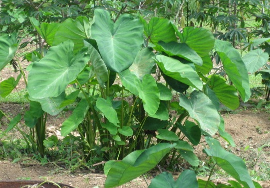

Content Area: Food, Culture, Science, Botany and Biological Diversity
Standard: Analyzing Influences.
Understand that science, changes in the environment, and society are interrelated.
- Objective: Name other countries where communities eat kalo.
- Objective: Identify other communities that use a traditional food to pass on their culture.
1. Identify other countries that eat kalo and learn the names they call it. Use a map to locate these countries and visualize kalo’s path from China and Egypt to Hawai’i.
- Egypt: Culcas
- India & Sri Lanka: Gahala
- Malyasia: Ta‘o, Ke-ladi, tallas
- Philippines: Gabi, abalong, ama-long
- Indonesia: Arvi
- Japan: Imo, sato imo
- Vietnam: Khoai au nu‘oc trang
- China: Ya, Yu-tao
- West Africa: Cocoyam, bai, koko, ya bere
- Spain: Tayoba
- Domincan Republic: Malanga
- Guatemala: Quiquisque
- Columbia: Chonque
- Venezuela: Danchi, ocumo, culin
- Brazil: Taioba
- Samoa: Talo
- Tonga: Talo
- Fiji: Dalo, taro

Taro in Costa Rica. Credit Janice Yap
2. Read this passage from Taro varieties in Hawai‘i, Bulletin 84 of the Hawaii Agricultural Experiment Station of the University of Hawaii (1939, pp. 6-8) to understand where kalo was first viewed as food.
'Taro was mentioned in Chinese books as early as 100 B.C. It was evidently thriving in Egypt at the beginning of the Christian Era, as Pliny (23-79 A.D.) refers to it as one of the established food plants of the country. The accounts of the early European navigators tell of the cultivation of this crop in Japan and the Western Pacific islands and as far south as New Zealand…'
3. View this video, Colocasia Fry. min. 3:06. By curryleaf2008. Link to Youtube.com. Discover how East Indians cook Kalo, 'nice, brown and crisp.'
4. Listen to this podcast, In Highland Peru, a Culture Confronts Blight. min. 7:38. By Joanne Silberner of National Public Radio. Link to NPR.org.
On the same webpage, listen and view the audio slideshow, Blight on the Horizon. min. 3:31. By Jane Greenhalgh of National Public Radio. Link to NPR.org.
Identify similarities between Andean Indians and Hawaiians in the way the Indians value their potato varieties.
5. Use these crop statistics to build a bar graph to compare kalo production in the United States with other crops:
Kalo: 4.3 million pounds of raw taro for poi in year 2009. Valued at $2.7 million at the farm gate. At the consumer end, this poi was worth an estimated $16.12 to more than $25.77 million in sales. From Taro Security and Purity Task Force, 2010 Report.
Rice: 20 billion pounds produced in crop year 2006. Valued at $1.88 billion. From Usarice.com. Link to USArice.com.
Potato: 46.32 billion pounds produced in crop year 2002. Valued at $3.15 billion. From Nationalpotatocouncil.org. Link to Nationalpotatocouncil.org
6. View this video, T.T. Chang discusses the value of rice’s diversity. min. 0:45. By the International Rice Research Institute (IRRI). Link to Youtube.com. Discuss the value of having many varieties of rice, and the challenges in maintaining the varieties.
Identify similar benefits between protecting rice varieties and kalo varieties.